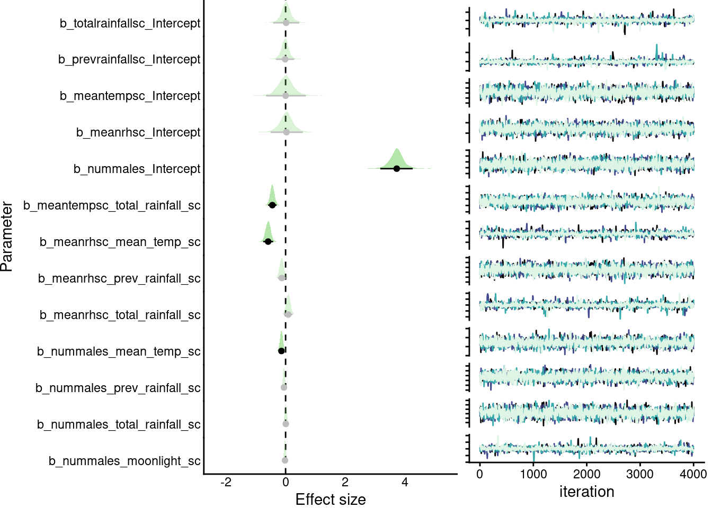
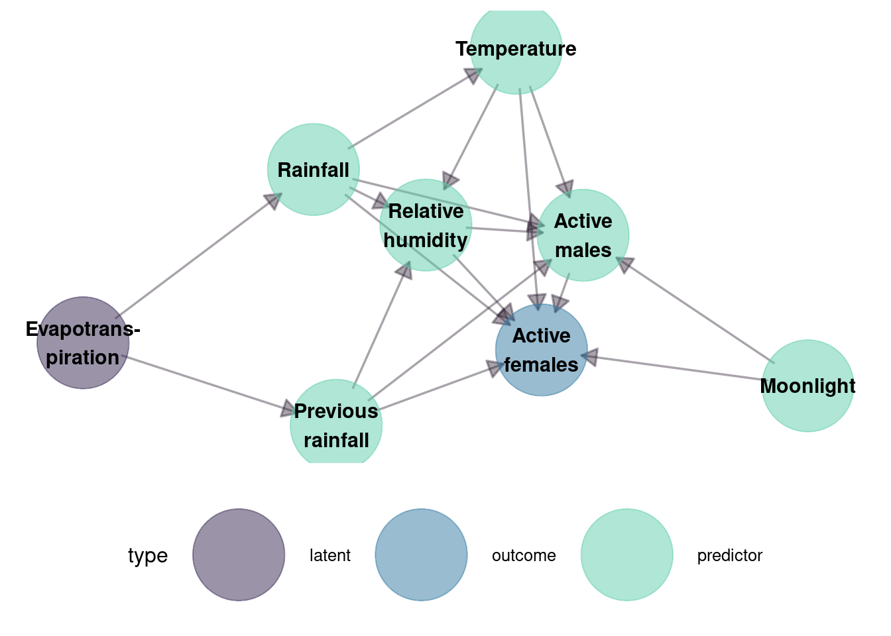
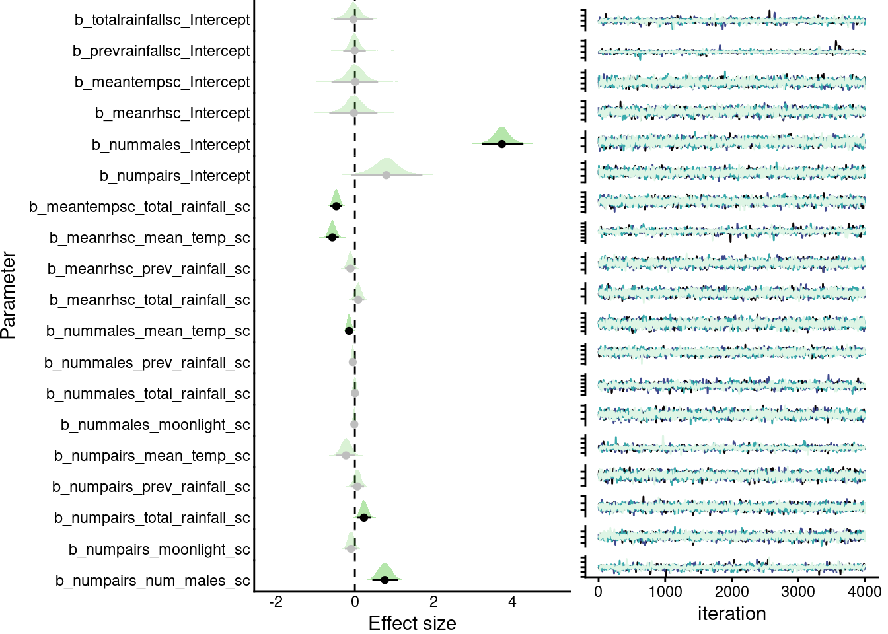

Code
# options to customize chunk outputs
knitr::opts_chunk$set(
message = FALSE,
warning = FALSE
)Emerald glassfrog mating activity
# options to customize chunk outputs
knitr::opts_chunk$set(
message = FALSE,
warning = FALSE
)
flowchart LR A[Read data] --> B(Format data) B --> C(Define DAGs) C --> D(Statistical analysis) D --> E(Model summary) style A fill:#382A5433 style B fill:#395D9C33 style C fill:#3497A933 style D fill:#60CEAC33
# knitr is require for creating html/pdf/word reports
# formatR is used for soft-wrapping code
# install/ load packages
sketchy::load_packages(packages = c("ggplot2", "viridis", "dagitty", "ggdag", "lunar", "brms", "brmsish"))dat <- read.csv("./data/raw/males and pairs_all years.csv")
dat$org.date <- dat$date
dat$date <- paste(dat$year, dat$date, sep = "-")
# convert "8-Jun" to month-day format
dat$date <- as.Date(dat$date, format = "%Y-%d-%b")
#convert to "1970-01-02" format
dat$date <- as.Date(dat$date, origin = "1970-01-01")
## add moon
dat$moonlight <- lunar.illumination(dat$date, shift = -6)Prepare data
# scale continuous variables
dat$mean_temp_sc <- scale(dat$mean_temp)
dat$mean_rh_sc <- scale(dat$mean_rh)
dat$total_rainfall_sc <- scale(dat$total_rainfall)
dat$prev_rainfall_sc <- scale(dat$previous_rainfall)
dat$moonlight_sc <- scale(dat$moonlight)
dat$year <- as.factor(dat$year)
dat$num_males_sc <- scale(dat$num_males)dag_l <- dagify(
total_rainfall_sc ~ evapotranspiration,
prev_rainfall_sc ~ evapotranspiration,
mean_temp_sc ~ total_rainfall_sc,
mean_rh_sc ~ total_rainfall_sc,
num_males ~ mean_rh_sc,
num_males ~ moonlight_sc,
mean_rh_sc ~ mean_temp_sc,
mean_rh_sc ~ prev_rainfall_sc,
mean_rh_sc ~ total_rainfall_sc,
num_males ~ mean_temp_sc,
num_males ~ prev_rainfall_sc,
num_males ~ total_rainfall_sc,
labels = c(
num_males = "Active\nmales",
mean_rh_sc = "Relative\nhumidity",
total_rainfall_sc = "Rainfall",
prev_rainfall_sc = "Previous\nrainfall",
moonlight_sc = "Moonlight",
mean_temp_sc = "Temperature",
evapotranspiration = "Evapotrans-\npiration",
latent = c("evapotrans-\npiration"),
outcome = "num_males"
)
)
set.seed(5)
tidy_dag <- tidy_dagitty(dag_l)
tidy_dag$data$type <- ifelse(is.na(tidy_dag$data$to), "outcome", "predictor")
tidy_dag$data$type[tidy_dag$data$name %in% c("evapotranspiration")] <- "latent"
ggplot(tidy_dag, aes(
x = x,
y = y,
xend = xend,
yend = yend
)) + scale_color_viridis_d(
option = "G",
begin = 0.2,
end = 0.8,
alpha = 0.5
) + geom_dag_edges_fan(
edge_color = mako(10, alpha = 0.4)[2],
arrow = grid::arrow(length = grid::unit(10, "pt"), type = "closed")
) + geom_dag_point(aes(color = type), size = 24) +
geom_dag_text(color = "black", aes(label = label, color = label)) +
theme_dag() +
theme(legend.position = "bottom")
# ----------------------------
# Submodels with year random intercept
# ----------------------------
bf_total_rain <- bf(
total_rainfall_sc ~ 1 + (1 | year)
)
bf_prev_rain <- bf(
prev_rainfall_sc ~ 1 + (1 | year)
)
bf_temp <- bf(
mean_temp_sc ~ 1 + total_rainfall_sc + (1 | year)
)
bf_rh <- bf(
mean_rh_sc ~ 1 +
mean_temp_sc +
prev_rainfall_sc +
total_rainfall_sc +
(1 | year)
)
bf_males <- bf(
num_males ~
s(mean_rh_sc) +
mean_temp_sc +
prev_rainfall_sc +
total_rainfall_sc +
moonlight_sc +
(1 | year),
family = negbinomial()
)
# ----------------------------
# Weakly informative priors
# ----------------------------
priors <- c(
# ----------------------------
# Linear slopes (all z-scored)
# ----------------------------
prior(normal(0, 0.5), class = "b", resp = "meanrhsc"),
prior(normal(0, 0.5), class = "b", resp = "meantempsc"),
prior(normal(0, 0.5), class = "b", resp = "nummales"),
# ----------------------------
# Smooth term (humidity → males)
# ----------------------------
prior(normal(0, 1), class = "sds", resp = "nummales"),
# ----------------------------
# Year random effects
# ----------------------------
# ----------------------------
# Negative binomial dispersion
# ----------------------------
prior(exponential(1), class = "shape", resp = "nummales")
)
# run a prior sampling model to check the priors
sem_prior_only <- brm(
bf_total_rain +
bf_prev_rain +
bf_temp +
bf_rh +
bf_males +
set_rescor(FALSE),
data = dat,
prior = priors,
sample_prior = "only",
iter = 2000,
chains = 2,
cores = 2,
backend = "cmdstanr",
file = "male_sem_prior_only.RDS",
file_refit = "on_change")
# check there are not flat priors
ps <- prior_summary(sem_prior_only)
any(grepl("flat", ps$prior))[1] FALSE
# ----------------------------
# Fit full SEM
# ----------------------------
sem_model <- brm(
bf_total_rain +
bf_prev_rain +
bf_temp +
bf_rh +
bf_males +
set_rescor(FALSE),
data = dat,
prior = priors,
chains = 4,
cores = 4,
iter = 4000,
control = list(adapt_delta = 0.95),
file = "./data/processed/male_sem_model.RDS",
backend = "cmdstanr",
file_refit = "on_change"
)
# beepr::beep(3)
extended_summary(sem_model, highlight = TRUE, trace.palette = mako)| formula | family | priors | iterations | chains | thinning | warmup | diverg_transitions | rhats > 1.05 | min_bulk_ESS | min_tail_ESS | seed | |
|---|---|---|---|---|---|---|---|---|---|---|---|---|
| 1 | list(totalrainfallsc = list(formula = total_rainfall_sc ~ 1 + (1 | year), pforms = list(), pfix = list(), resp = “totalrainfallsc”, family = list(family = “gaussian”, link = “identity”, linkfun = function (mu) link(mu, link = slink), linkinv = function (eta) inv_link(eta, link = slink), dpars = c(“mu”, “sigma”), type = “real”, ybounds = c(-Inf, Inf), closed = c(NA, NA), ad = c(“weights”, “subset”, “se”, “cens”, “trunc”, “mi”, “index”), normalized = c(“_time_hom”, “_time_het”, “_lagsar”, “_errorsar”, “_fcor”), specials = c(“residuals”, “rescor”)), mecor = TRUE), prevrainfallsc = list(formula = prev_rainfall_sc ~ 1 + (1 | year), pforms = list(), pfix = list(), resp = “prevrainfallsc”, family = list(family = “gaussian”, link = “identity”, linkfun = function (mu) link(mu, link = slink), linkinv = function (eta) inv_link(eta, link = slink), dpars = c(“mu”, “sigma”), type = “real”, ybounds = c(-Inf, Inf), closed = c(NA, NA), ad = c(“weights”, “subset”, “se”, “cens”, “trunc”, “mi”, “index”), normalized = c(“_time_hom”, “_time_het”, “_lagsar”, “_errorsar”, “_fcor”), specials = c(“residuals”, “rescor”)), mecor = TRUE), meantempsc = list(formula = mean_temp_sc ~ 1 + total_rainfall_sc + (1 | year), pforms = list(), pfix = list(), resp = “meantempsc”, family = list(family = “gaussian”, link = “identity”, linkfun = function (mu) link(mu, link = slink), linkinv = function (eta) inv_link(eta, link = slink), dpars = c(“mu”, “sigma”), type = “real”, ybounds = c(-Inf, Inf), closed = c(NA, NA), ad = c(“weights”, “subset”, “se”, “cens”, “trunc”, “mi”, “index”), normalized = c(“_time_hom”, “_time_het”, “_lagsar”, “_errorsar”, “_fcor”), specials = c(“residuals”, “rescor”)), mecor = TRUE), meanrhsc = list(formula = mean_rh_sc ~ 1 + mean_temp_sc + prev_rainfall_sc + total_rainfall_sc + (1 | year), pforms = list(), pfix = list(), resp = “meanrhsc”, family = list(family = “gaussian”, link = “identity”, linkfun = function (mu) link(mu, link = slink), linkinv = function (eta) inv_link(eta, link = slink), dpars = c(“mu”, “sigma”), type = “real”, ybounds = c(-Inf, Inf), closed = c(NA, NA), ad = c(“weights”, “subset”, “se”, “cens”, “trunc”, “mi”, “index”), normalized = c(“_time_hom”, “_time_het”, “_lagsar”, “_errorsar”, “_fcor”), specials = c(“residuals”, “rescor”)), mecor = TRUE), nummales = list(formula = num_males ~ s(mean_rh_sc) + mean_temp_sc + prev_rainfall_sc + total_rainfall_sc + moonlight_sc + (1 | year), pforms = list(), pfix = list(), family = list(family = “negbinomial”, link = “log”, linkfun = function (mu) link(mu, link = slink), linkinv = function (eta) inv_link(eta, link = slink), dpars = c(“mu”, “shape”), type = “int”, ybounds = c(0, Inf), closed = c(TRUE, NA), ad = c(“weights”, “subset”, “cens”, “trunc”, “rate”, “index”), specials = “sbi_log”, prior = function (dpar, link = “identity”, …) { if (dpar == “shape” && link == “identity”) { return(“inv_gamma(0.4, 0.3)”) } NULL }, link_shape = “log”), resp = “nummales”, mecor = TRUE)) | () | b-normal(0, 0.5) b-normal(0, 0.5) b-normal(0, 0.5) Intercept-student_t(3, 0.1, 2.5) Intercept-student_t(3, 0, 2.5) Intercept-student_t(3, 3.8, 2.5) Intercept-student_t(3, -0.4, 2.5) Intercept-student_t(3, -0.5, 2.5) sd-student_t(3, 0, 2.5) sd-student_t(3, 0, 2.5) sd-student_t(3, 0, 2.5) sd-student_t(3, 0, 2.5) sd-student_t(3, 0, 2.5) sds-normal(0, 1) shape-exponential(1) sigma-student_t(3, 0, 2.5) sigma-student_t(3, 0, 2.5) sigma-student_t(3, 0, 2.5) sigma-student_t(3, 0, 2.5) | 4000 | 4 | 1 | 2000 | 8 (0.001%) | 0 | 2285.026 | 2321.81 | 115649959 |
| Estimate | l-95% CI | u-95% CI | Rhat | Bulk_ESS | Tail_ESS | |
|---|---|---|---|---|---|---|
| b_totalrainfallsc_Intercept | 0.017 | -0.417 | 0.455 | 1.001 | 3730.536 | 3421.669 |
| b_prevrainfallsc_Intercept | -0.014 | -0.327 | 0.289 | 1 | 3903.986 | 2321.810 |
| b_meantempsc_Intercept | 0.000 | -0.654 | 0.677 | 1.001 | 2895.283 | 2647.731 |
| b_meanrhsc_Intercept | 0.030 | -0.499 | 0.578 | 1.004 | 2953.679 | 3191.870 |
| b_nummales_Intercept | 3.722 | 3.172 | 4.257 | 1.002 | 2285.026 | 2430.764 |
| b_meantempsc_total_rainfall_sc | -0.444 | -0.586 | -0.304 | 1.001 | 9655.804 | 5925.253 |
| b_meanrhsc_mean_temp_sc | -0.585 | -0.749 | -0.418 | 1 | 7381.455 | 6299.880 |
| b_meanrhsc_prev_rainfall_sc | -0.127 | -0.261 | 0.007 | 1.001 | 8490.696 | 6175.883 |
| b_meanrhsc_total_rainfall_sc | 0.088 | -0.056 | 0.233 | 1 | 7815.999 | 5926.343 |
| b_nummales_mean_temp_sc | -0.139 | -0.235 | -0.046 | 1 | 8116.573 | 5911.242 |
| b_nummales_prev_rainfall_sc | -0.056 | -0.121 | 0.010 | 1 | 9113.798 | 5946.232 |
| b_nummales_total_rainfall_sc | 0.006 | -0.066 | 0.079 | 1.001 | 9190.283 | 6076.678 |
| b_nummales_moonlight_sc | -0.020 | -0.077 | 0.038 | 1 | 11218.974 | 5778.057 |

dag_l <- dagify(
num_males_sc ~ mean_rh_sc,
num_males_sc ~ moonlight_sc,
num_males_sc ~ mean_temp_sc,
num_males_sc ~ prev_rainfall_sc,
num_males_sc ~ total_rainfall_sc,
total_rainfall_sc ~ evapotranspiration,
prev_rainfall_sc ~ evapotranspiration,
mean_temp_sc ~ total_rainfall_sc,
mean_rh_sc ~ total_rainfall_sc,
num_pairs ~ mean_rh_sc,
num_pairs ~ moonlight_sc,
mean_rh_sc ~ mean_temp_sc,
mean_rh_sc ~ prev_rainfall_sc,
mean_rh_sc ~ total_rainfall_sc,
num_pairs ~ mean_temp_sc,
num_pairs ~ prev_rainfall_sc,
num_pairs ~ total_rainfall_sc,
num_pairs ~ num_males_sc,
labels = c(
num_pairs = "Active\nfemales",
mean_rh_sc = "Relative\nhumidity",
total_rainfall_sc = "Rainfall",
prev_rainfall_sc = "Previous\nrainfall",
moonlight_sc = "Moonlight",
mean_temp_sc = "Temperature",
num_males_sc = "Active\nmales",
evapotranspiration = "Evapotrans-\npiration",
latent = c("evapotrans-\npiration"),
outcome = "num_pairs"
)
)
set.seed(5)
tidy_dag <- tidy_dagitty(dag_l)
tidy_dag$data$type <- ifelse(is.na(tidy_dag$data$to), "outcome", "predictor")
tidy_dag$data$type[tidy_dag$data$name %in% c("evapotranspiration")] <- "latent"
ggplot(tidy_dag, aes(
x = x,
y = y,
xend = xend,
yend = yend
)) + scale_color_viridis_d(
option = "G",
begin = 0.2,
end = 0.8,
alpha = 0.5
) + geom_dag_edges_fan(
edge_color = mako(10, alpha = 0.4)[2],
arrow = grid::arrow(length = grid::unit(10, "pt"), type = "closed")
) + geom_dag_point(aes(color = type), size = 24) +
geom_dag_text(color = "black", aes(label = label, color = label)) +
theme_dag() +
theme(legend.position = "bottom")
# ----------------------------
# Submodels
# ----------------------------
bf_total_rain <- bf(
total_rainfall_sc ~ 1 + (1 | year)
)
bf_prev_rain <- bf(
prev_rainfall_sc ~ 1 + (1 | year)
)
bf_temp <- bf(
mean_temp_sc ~ 1 +
total_rainfall_sc +
(1 | year)
)
bf_rh <- bf(
mean_rh_sc ~ 1 +
mean_temp_sc +
prev_rainfall_sc +
total_rainfall_sc +
(1 | year)
)
# mediator: active males (count)
bf_males <- bf(
num_males ~
s(mean_rh_sc) +
mean_temp_sc +
prev_rainfall_sc +
total_rainfall_sc +
moonlight_sc +
(1 | year),
family = negbinomial()
)
# outcome: active females (count)
bf_pairs <- bf(
num_pairs ~
s(mean_rh_sc) +
mean_temp_sc +
prev_rainfall_sc +
total_rainfall_sc +
moonlight_sc +
num_males_sc +
(1 | year),
family = negbinomial()
)
# ----------------------------
# Weakly informative priors
# ----------------------------
priors <- c(
# Linear slopes (all predictors z-scored)
prior(normal(0, 0.5), class = "b", resp = "meanrhsc"),
prior(normal(0, 0.5), class = "b", resp = "meantempsc"),
prior(normal(0, 0.5), class = "b", resp = "nummales"),
prior(normal(0, 0.5), class = "b", resp = "numpairs"),
# Smooth terms (humidity effects)
prior(normal(0, 1), class = "sds", resp = "nummales"),
prior(normal(0, 1), class = "sds", resp = "numpairs"),
# Negative binomial dispersion
prior(exponential(1), class = "shape", resp = "nummales"),
prior(exponential(1), class = "shape", resp = "numpairs")
)
# ----------------------------
# Prior predictive check
# ----------------------------
sem_prior_only <- brm(
bf_total_rain +
bf_prev_rain +
bf_temp +
bf_rh +
bf_males +
bf_pairs +
set_rescor(FALSE),
data = dat,
prior = priors,
sample_prior = "only",
iter = 2000,
chains = 2,
cores = 2,
backend = "cmdstanr",
file = "female_sem_prior_only.RDS",
file_refit = "on_change"
)
ps <- prior_summary(sem_prior_only)
any(grepl("flat", ps$prior))[1] FALSE
# ----------------------------
# Fit full SEM
# ----------------------------
fem_sem_model <- brm(
bf_total_rain +
bf_prev_rain +
bf_temp +
bf_rh +
bf_males +
bf_pairs +
set_rescor(FALSE),
data = dat,
prior = priors,
chains = 4,
cores = 4,
iter = 4000,
control = list(adapt_delta = 0.95),
file = "./data/processed/female_sem_model.RDS",
backend = "cmdstanr",
file_refit = "on_change"
)
extended_summary(
fem_sem_model,
highlight = TRUE,
trace.palette = mako
)| formula | family | priors | iterations | chains | thinning | warmup | diverg_transitions | rhats > 1.05 | min_bulk_ESS | min_tail_ESS | seed | |
|---|---|---|---|---|---|---|---|---|---|---|---|---|
| 1 | list(totalrainfallsc = list(formula = total_rainfall_sc ~ 1 + (1 | year), pforms = list(), pfix = list(), resp = “totalrainfallsc”, family = list(family = “gaussian”, link = “identity”, linkfun = function (mu) link(mu, link = slink), linkinv = function (eta) inv_link(eta, link = slink), dpars = c(“mu”, “sigma”), type = “real”, ybounds = c(-Inf, Inf), closed = c(NA, NA), ad = c(“weights”, “subset”, “se”, “cens”, “trunc”, “mi”, “index”), normalized = c(“_time_hom”, “_time_het”, “_lagsar”, “_errorsar”, “_fcor”), specials = c(“residuals”, “rescor”)), mecor = TRUE), prevrainfallsc = list(formula = prev_rainfall_sc ~ 1 + (1 | year), pforms = list(), pfix = list(), resp = “prevrainfallsc”, family = list(family = “gaussian”, link = “identity”, linkfun = function (mu) link(mu, link = slink), linkinv = function (eta) inv_link(eta, link = slink), dpars = c(“mu”, “sigma”), type = “real”, ybounds = c(-Inf, Inf), closed = c(NA, NA), ad = c(“weights”, “subset”, “se”, “cens”, “trunc”, “mi”, “index”), normalized = c(“_time_hom”, “_time_het”, “_lagsar”, “_errorsar”, “_fcor”), specials = c(“residuals”, “rescor”)), mecor = TRUE), meantempsc = list(formula = mean_temp_sc ~ 1 + total_rainfall_sc + (1 | year), pforms = list(), pfix = list(), resp = “meantempsc”, family = list(family = “gaussian”, link = “identity”, linkfun = function (mu) link(mu, link = slink), linkinv = function (eta) inv_link(eta, link = slink), dpars = c(“mu”, “sigma”), type = “real”, ybounds = c(-Inf, Inf), closed = c(NA, NA), ad = c(“weights”, “subset”, “se”, “cens”, “trunc”, “mi”, “index”), normalized = c(“_time_hom”, “_time_het”, “_lagsar”, “_errorsar”, “_fcor”), specials = c(“residuals”, “rescor”)), mecor = TRUE), meanrhsc = list(formula = mean_rh_sc ~ 1 + mean_temp_sc + prev_rainfall_sc + total_rainfall_sc + (1 | year), pforms = list(), pfix = list(), resp = “meanrhsc”, family = list(family = “gaussian”, link = “identity”, linkfun = function (mu) link(mu, link = slink), linkinv = function (eta) inv_link(eta, link = slink), dpars = c(“mu”, “sigma”), type = “real”, ybounds = c(-Inf, Inf), closed = c(NA, NA), ad = c(“weights”, “subset”, “se”, “cens”, “trunc”, “mi”, “index”), normalized = c(“_time_hom”, “_time_het”, “_lagsar”, “_errorsar”, “_fcor”), specials = c(“residuals”, “rescor”)), mecor = TRUE), nummales = list(formula = num_males ~ s(mean_rh_sc) + mean_temp_sc + prev_rainfall_sc + total_rainfall_sc + moonlight_sc + (1 | year), pforms = list(), pfix = list(), family = list(family = “negbinomial”, link = “log”, linkfun = function (mu) link(mu, link = slink), linkinv = function (eta) inv_link(eta, link = slink), dpars = c(“mu”, “shape”), type = “int”, ybounds = c(0, Inf), closed = c(TRUE, NA), ad = c(“weights”, “subset”, “cens”, “trunc”, “rate”, “index”), specials = “sbi_log”, prior = function (dpar, link = “identity”, …) { if (dpar == “shape” && link == “identity”) { return(“inv_gamma(0.4, 0.3)”) } NULL }, link_shape = “log”), resp = “nummales”, mecor = TRUE), numpairs = list(formula = num_pairs ~ s(mean_rh_sc) + mean_temp_sc + prev_rainfall_sc + total_rainfall_sc + moonlight_sc + num_males_sc + (1 | year), pforms = list(), pfix = list(), family = list(family = “negbinomial”, link = “log”, linkfun = function (mu) link(mu, link = slink), linkinv = function (eta) inv_link(eta, link = slink), dpars = c(“mu”, “shape”), type = “int”, ybounds = c(0, Inf), closed = c(TRUE, NA), ad = c(“weights”, “subset”, “cens”, “trunc”, “rate”, “index”), specials = “sbi_log”, prior = function (dpar, link = “identity”, …) { if (dpar == “shape” && link == “identity”) { return(“inv_gamma(0.4, 0.3)”) } NULL }, link_shape = “log”), resp = “numpairs”, mecor = TRUE)) | () | b-normal(0, 0.5) b-normal(0, 0.5) b-normal(0, 0.5) b-normal(0, 0.5) Intercept-student_t(3, 0.1, 2.5) Intercept-student_t(3, 0.1, 2.5) Intercept-student_t(3, 3.7, 2.5) Intercept-student_t(3, 0.7, 2.5) Intercept-student_t(3, -0.4, 2.5) Intercept-student_t(3, -0.5, 2.5) sd-student_t(3, 0, 2.5) sd-student_t(3, 0, 2.5) sd-student_t(3, 0, 2.5) sd-student_t(3, 0, 2.5) sd-student_t(3, 0, 2.5) sd-student_t(3, 0, 2.5) sds-normal(0, 1) sds-normal(0, 1) shape-exponential(1) shape-exponential(1) sigma-student_t(3, 0, 2.5) sigma-student_t(3, 0, 2.5) sigma-student_t(3, 0, 2.5) sigma-student_t(3, 0, 2.5) | 4000 | 4 | 1 | 2000 | 7 (0.00088%) | 0 | 1775.428 | 2410.555 | 576446089 |
| Estimate | l-95% CI | u-95% CI | Rhat | Bulk_ESS | Tail_ESS | |
|---|---|---|---|---|---|---|
| b_totalrainfallsc_Intercept | -0.037 | -0.539 | 0.469 | 1 | 3001.799 | 3413.732 |
| b_prevrainfallsc_Intercept | -0.006 | -0.297 | 0.278 | 1.002 | 3558.248 | 2410.555 |
| b_meantempsc_Intercept | 0.009 | -0.594 | 0.589 | 1.001 | 2473.014 | 3253.100 |
| b_meanrhsc_Intercept | -0.023 | -0.650 | 0.572 | 1.001 | 2372.046 | 3109.442 |
| b_nummales_Intercept | 3.735 | 3.231 | 4.279 | 1.001 | 1775.428 | 2669.299 |
| b_numpairs_Intercept | 0.796 | -0.092 | 1.715 | 1.001 | 2156.754 | 2873.017 |
| b_meantempsc_total_rainfall_sc | -0.471 | -0.623 | -0.321 | 1 | 10980.283 | 5960.978 |
| b_meanrhsc_mean_temp_sc | -0.571 | -0.734 | -0.409 | 1.001 | 6491.187 | 6240.411 |
| b_meanrhsc_prev_rainfall_sc | -0.114 | -0.253 | 0.023 | 1 | 10504.450 | 5910.732 |
| b_meanrhsc_total_rainfall_sc | 0.085 | -0.069 | 0.237 | 1.001 | 8400.758 | 6096.771 |
| b_nummales_mean_temp_sc | -0.148 | -0.245 | -0.050 | 1 | 7928.018 | 6215.787 |
| b_nummales_prev_rainfall_sc | -0.055 | -0.119 | 0.012 | 1 | 9538.289 | 6383.843 |
| b_nummales_total_rainfall_sc | 0.002 | -0.077 | 0.081 | 1 | 9140.630 | 6175.809 |
| b_nummales_moonlight_sc | -0.015 | -0.076 | 0.046 | 1 | 12097.742 | 6112.137 |
| b_numpairs_mean_temp_sc | -0.226 | -0.474 | 0.015 | 1 | 8505.310 | 6402.181 |
| b_numpairs_prev_rainfall_sc | 0.062 | -0.107 | 0.233 | 1 | 10778.793 | 5839.737 |
| b_numpairs_total_rainfall_sc | 0.231 | 0.052 | 0.416 | 1.001 | 10341.545 | 6376.236 |
| b_numpairs_moonlight_sc | -0.099 | -0.254 | 0.055 | 1.001 | 12258.383 | 6047.115 |
| b_numpairs_num_males_sc | 0.761 | 0.444 | 1.096 | 1 | 7047.072 | 5650.799 |

─ Session info ───────────────────────────────────────────────────────────────
setting value
version R version 4.5.2 (2025-10-31)
os Ubuntu 22.04.5 LTS
system x86_64, linux-gnu
ui X11
language (EN)
collate en_US.UTF-8
ctype en_US.UTF-8
tz America/Costa_Rica
date 2026-01-28
pandoc 3.2 @ /usr/lib/rstudio/resources/app/bin/quarto/bin/tools/x86_64/ (via rmarkdown)
quarto 1.7.31 @ /usr/local/bin/quarto
─ Packages ───────────────────────────────────────────────────────────────────
package * version date (UTC) lib source
abind 1.4-8 2024-09-12 [1] CRAN (R 4.5.0)
ape 5.8-1 2024-12-16 [1] CRAN (R 4.5.0)
arrayhelpers 1.1-0 2020-02-04 [1] CRAN (R 4.5.0)
backports 1.5.0 2024-05-23 [1] CRAN (R 4.5.0)
bayesplot 1.15.0 2025-12-12 [1] CRAN (R 4.5.2)
boot 1.3-32 2025-08-29 [4] CRAN (R 4.5.1)
bridgesampling 1.2-1 2025-11-19 [1] CRAN (R 4.5.0)
brms * 2.23.0 2025-09-09 [1] CRAN (R 4.5.0)
brmsish * 1.0.0 2026-01-06 [1] CRANs (R 4.5.2)
Brobdingnag 1.2-9 2022-10-19 [1] CRAN (R 4.5.0)
cachem 1.1.0 2024-05-16 [1] CRAN (R 4.5.0)
checkmate 2.3.3 2025-08-18 [1] CRAN (R 4.5.0)
cli 3.6.5 2025-04-23 [1] CRAN (R 4.5.0)
cmdstanr 0.9.0 2025-08-21 [1] https://stan-dev.r-universe.dev (R 4.5.0)
coda 0.19-4.1 2024-01-31 [1] CRAN (R 4.5.0)
codetools 0.2-20 2024-03-31 [4] CRAN (R 4.5.0)
cowplot 1.2.0 2025-07-07 [1] CRAN (R 4.5.0)
crayon 1.5.3 2024-06-20 [1] CRAN (R 4.5.0)
curl 7.0.0 2025-08-19 [1] CRAN (R 4.5.0)
dagitty * 0.3-4 2023-12-07 [1] CRAN (R 4.5.0)
devtools 2.4.5 2022-10-11 [1] CRAN (R 4.5.0)
digest 0.6.39 2025-11-19 [1] CRAN (R 4.5.0)
distributional 0.5.0 2024-09-17 [1] CRAN (R 4.5.0)
dplyr 1.1.4 2023-11-17 [1] CRAN (R 4.5.0)
ellipsis 0.3.2 2021-04-29 [3] CRAN (R 4.1.1)
emmeans 1.11.1 2025-05-04 [3] CRAN (R 4.5.0)
estimability 1.5.1 2024-05-12 [3] CRAN (R 4.5.0)
evaluate 1.0.5 2025-08-27 [1] CRAN (R 4.5.0)
farver 2.1.2 2024-05-13 [1] CRAN (R 4.5.0)
fastmap 1.2.0 2024-05-15 [1] CRAN (R 4.5.0)
fs 1.6.6 2025-04-12 [1] CRAN (R 4.5.0)
generics 0.1.4 2025-05-09 [1] CRAN (R 4.5.0)
ggdag * 0.2.13 2024-07-22 [1] CRAN (R 4.5.0)
ggdist 3.3.3 2025-04-23 [1] CRAN (R 4.5.0)
ggforce 0.3.3 2021-03-05 [3] CRAN (R 4.1.1)
ggplot2 * 4.0.1 2025-11-14 [1] CRAN (R 4.5.0)
ggraph 2.0.5 2021-02-23 [3] CRAN (R 4.1.1)
ggrepel 0.9.6 2024-09-07 [1] CRAN (R 4.5.0)
glue 1.8.0 2024-09-30 [1] CRAN (R 4.5.0)
graphlayouts 0.8.0 2022-01-03 [3] CRAN (R 4.1.2)
gridExtra 2.3 2017-09-09 [1] CRAN (R 4.5.0)
gtable 0.3.6 2024-10-25 [1] CRAN (R 4.5.0)
htmltools 0.5.9 2025-12-04 [1] CRAN (R 4.5.0)
htmlwidgets 1.6.4 2023-12-06 [1] RSPM (R 4.5.0)
httpuv 1.6.16 2025-04-16 [1] RSPM (R 4.5.0)
igraph 2.2.1 2025-10-27 [1] CRAN (R 4.5.0)
inline 0.3.21 2025-01-09 [1] CRAN (R 4.5.0)
jsonlite 2.0.0 2025-03-27 [1] CRAN (R 4.5.0)
kableExtra 1.4.0 2024-01-24 [1] CRAN (R 4.5.0)
knitr 1.51 2025-12-20 [1] CRAN (R 4.5.2)
labeling 0.4.3 2023-08-29 [1] CRAN (R 4.5.0)
later 1.4.2 2025-04-08 [1] RSPM (R 4.5.0)
lattice 0.22-7 2025-04-02 [4] CRAN (R 4.5.0)
lifecycle 1.0.5 2026-01-08 [1] CRAN (R 4.5.2)
loo 2.9.0 2025-12-23 [1] CRAN (R 4.5.2)
lunar * 0.2-1 2022-06-13 [1] CRAN (R 4.5.2)
magrittr 2.0.4 2025-09-12 [1] CRAN (R 4.5.0)
MASS 7.3-65 2025-02-28 [4] CRAN (R 4.4.3)
Matrix 1.7-4 2025-08-28 [4] CRAN (R 4.5.1)
matrixStats 1.5.0 2025-01-07 [1] CRAN (R 4.5.0)
memoise 2.0.1 2021-11-26 [1] CRAN (R 4.5.0)
mgcv 1.9-3 2025-04-04 [4] CRAN (R 4.5.0)
mime 0.13 2025-03-17 [1] CRAN (R 4.5.0)
miniUI 0.1.2 2025-04-17 [3] CRAN (R 4.5.0)
multcomp 1.4-28 2025-01-29 [3] CRAN (R 4.5.0)
mvtnorm 1.3-3 2025-01-10 [1] CRAN (R 4.5.0)
nlme 3.1-168 2025-03-31 [4] CRAN (R 4.4.3)
packrat 0.9.3 2025-06-16 [1] CRAN (R 4.5.2)
pbapply 1.7-4 2025-07-20 [1] CRAN (R 4.5.0)
pillar 1.11.1 2025-09-17 [1] CRAN (R 4.5.0)
pkgbuild 1.4.8 2025-05-26 [1] CRAN (R 4.5.0)
pkgconfig 2.0.3 2019-09-22 [1] CRAN (R 4.5.0)
pkgload 1.4.1 2025-09-23 [1] CRAN (R 4.5.0)
plyr 1.8.9 2023-10-02 [1] CRAN (R 4.5.0)
polyclip 1.10-7 2024-07-23 [1] CRAN (R 4.5.0)
posterior 1.6.1 2025-02-27 [1] CRAN (R 4.5.0)
processx 3.8.6 2025-02-21 [1] CRAN (R 4.5.0)
profvis 0.4.0 2024-09-20 [1] CRAN (R 4.5.0)
promises 1.3.3 2025-05-29 [1] RSPM (R 4.5.0)
ps 1.9.1 2025-04-12 [1] CRAN (R 4.5.0)
purrr 1.2.0 2025-11-04 [1] CRAN (R 4.5.0)
QuickJSR 1.8.1 2025-09-20 [1] CRAN (R 4.5.0)
R6 2.6.1 2025-02-15 [1] CRAN (R 4.5.0)
RColorBrewer 1.1-3 2022-04-03 [1] CRAN (R 4.5.0)
Rcpp * 1.1.0 2025-07-02 [1] CRAN (R 4.5.0)
RcppParallel 5.1.11-1 2025-08-27 [1] CRAN (R 4.5.0)
remotes 2.5.0 2024-03-17 [1] CRAN (R 4.5.0)
reshape2 1.4.5 2025-11-12 [1] CRAN (R 4.5.0)
rlang 1.1.7 2026-01-09 [1] CRAN (R 4.5.2)
rmarkdown 2.30 2025-09-28 [1] CRAN (R 4.5.0)
rstan 2.32.7 2025-03-10 [1] CRAN (R 4.5.0)
rstantools 2.5.0 2025-09-01 [1] CRAN (R 4.5.0)
rstudioapi 0.17.1 2024-10-22 [1] CRAN (R 4.5.0)
S7 0.2.1 2025-11-14 [1] CRAN (R 4.5.0)
sandwich 3.1-1 2024-09-15 [3] CRAN (R 4.5.0)
scales 1.4.0 2025-04-24 [1] CRAN (R 4.5.0)
sessioninfo 1.2.3 2025-02-05 [3] CRAN (R 4.5.0)
shiny 1.10.0 2024-12-14 [1] CRAN (R 4.5.0)
sketchy 1.0.7 2026-01-28 [1] CRANs (R 4.5.2)
StanHeaders 2.32.10 2024-07-15 [1] CRAN (R 4.5.0)
stringi 1.8.7 2025-03-27 [1] CRAN (R 4.5.0)
stringr 1.6.0 2025-11-04 [1] CRAN (R 4.5.0)
survival 3.8-3 2024-12-17 [4] CRAN (R 4.4.2)
svglite 2.2.2 2025-10-21 [1] CRAN (R 4.5.0)
svUnit 1.0.8 2025-08-26 [1] CRAN (R 4.5.0)
systemfonts 1.3.1 2025-10-01 [1] CRAN (R 4.5.0)
tensorA 0.36.2.1 2023-12-13 [1] CRAN (R 4.5.0)
textshaping 1.0.4 2025-10-10 [1] CRAN (R 4.5.0)
TH.data 1.1-3 2025-01-17 [3] CRAN (R 4.5.0)
tibble 3.3.0 2025-06-08 [1] RSPM (R 4.5.0)
tidybayes 3.0.7 2024-09-15 [1] CRAN (R 4.5.0)
tidygraph 1.2.0 2020-05-12 [3] CRAN (R 4.0.1)
tidyr 1.3.2 2025-12-19 [1] CRAN (R 4.5.2)
tidyselect 1.2.1 2024-03-11 [1] CRAN (R 4.5.0)
tweenr 2.0.3 2024-02-26 [3] CRAN (R 4.5.0)
urlchecker 1.0.1 2021-11-30 [1] CRAN (R 4.5.0)
usethis 3.1.0 2024-11-26 [3] CRAN (R 4.5.0)
V8 6.0.4 2025-06-04 [1] RSPM (R 4.5.0)
vctrs 0.7.1 2026-01-23 [1] CRAN (R 4.5.2)
viridis * 0.6.5 2024-01-29 [1] CRAN (R 4.5.0)
viridisLite * 0.4.2 2023-05-02 [1] CRAN (R 4.5.0)
withr 3.0.2 2024-10-28 [1] CRAN (R 4.5.0)
xaringanExtra 0.8.0 2024-05-19 [1] CRAN (R 4.5.0)
xfun 0.56 2026-01-18 [1] CRAN (R 4.5.2)
xml2 1.5.2 2026-01-17 [1] CRAN (R 4.5.2)
xtable 1.8-4 2019-04-21 [3] CRAN (R 4.0.1)
yaml 2.3.12 2025-12-10 [1] CRAN (R 4.5.2)
zoo 1.8-14 2025-04-10 [3] CRAN (R 4.5.0)
[1] /home/m/R/x86_64-pc-linux-gnu-library/4.5
[2] /usr/local/lib/R/site-library
[3] /usr/lib/R/site-library
[4] /usr/lib/R/library
* ── Packages attached to the search path.
──────────────────────────────────────────────────────────────────────────────